剖析Hash传递攻击的本质、缓解方式及部分绕过手段
Author: Exist@SycloverSecurity
2018/09/04
LM Hash、NTLM Hash、Net-NTLM Hash的区别与联系
LM Hash
LM Hash是一种较古老的Hash，在LAN Manager协议中使用，非常容易通过暴力破解获取明文凭据。Vista以前的Windows OS使用它，Vista之后的版本默认禁用了LM协议，但某些情况下还是可以使用。
NTLM Hash
Vista以上现代操作系统使用的Hash。通常意义上的NTLM Hash指存储在SAM数据库及NTDS数据库中对密码进行摘要计算后的结果，这类Hash可以直接用于PtH，并且通常存在于lsass进程中，便于SSP使用
Net-NTLM Hash
Net-NTLM Hash用于网络身份认证（例如ntlm认证中），目前分为两个版本：
- Net-NTLMv1
- Net-NTLMv2
通常我们使用Responder等工具获取到的就是NetNTLM，这类hash并不能直接用来PtH，但有可能通过暴力破解来获取明文密码
联系
Net-NTLM出现在NTLM认证过程中，其计算过程依赖NTLM Hash
参考资料：
https://medium.com/@petergombos/lm-ntlm-net-ntlmv2-oh-my-a9b235c58ed4
NTLM认证
本文提到的NTLM认证特指Microsoft NTLM Protocol。
工作组环境
NTLM认证是一种在网络上进行认证的安全协议，其主要过程粗略地分为三步：
- 客户端发起认证请求
- 服务端收到认证请求，向客户端发送随机数（chanlleng/挑战）
- 客户端使用NTLM Hash打乱该随机数，生成Net-NTLM Hash，发送回服务端
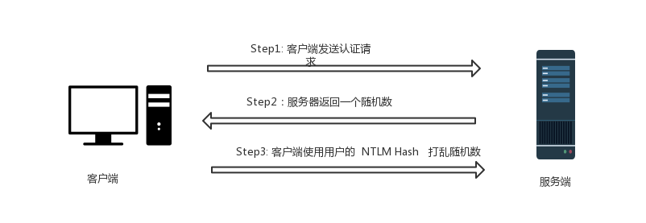
域环境
上面的过程发生在工作组环境中，在域环境中使用NTLM Pass-Through认证，核心过程与工作组没有太大区别：
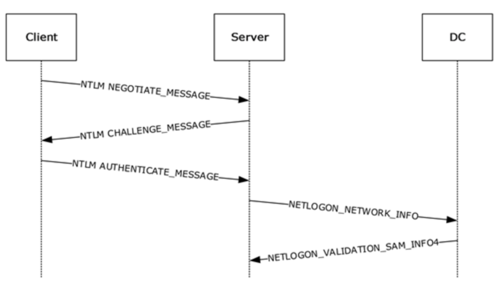
主要区别在于Server会将认证信息使用netlogon协议发送给域控制器，由域控制器完成检验并返回认证结果
网络登录与非网络登录
网络登陆
在网络登录过程中不使用凭证输入对话框来收集数据，而会使用到预先生成的凭据。
非网络登陆
分为网络明文登陆和交互式登陆等。这些登录类型在认证期间将用户明文密码发送到服务器。 服务器可以在LSASS中缓存这个密码或其处理后的值，并使用它来验证其他资源。
网络登录与NTLM认证
NTLM认证出现在网络登录中，而远程服务器不缓存用户凭据，这也与ntlm认证的特性相吻合。 Double-Hop的问题也与网络/非网络登录的性质有关。
PtH攻击原理
注意：本文所指均为狭义上的Pass-the-Hash，即一种在NTLM认证中使用NTLM Hash进行认证的手段
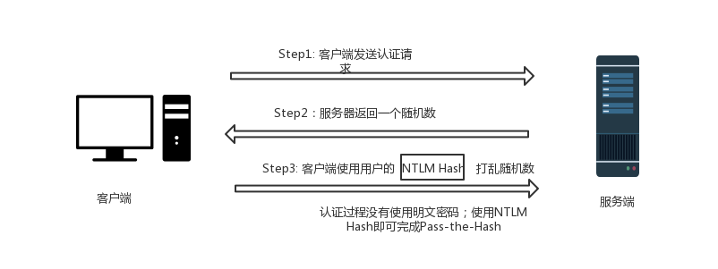
在上面的三步过程中，我们发现并没有使用到用户提供的明文密码，而是使用NTLM Hash来计算NetNTLM Hash。Hash传递攻击就发生在NTLM认证的第三步，我们能使用获取到的NTLM Hash来完成一次完整的认证。
PtH操作演示
靶机ip：
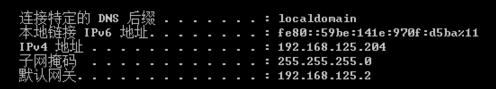
攻击机ip：
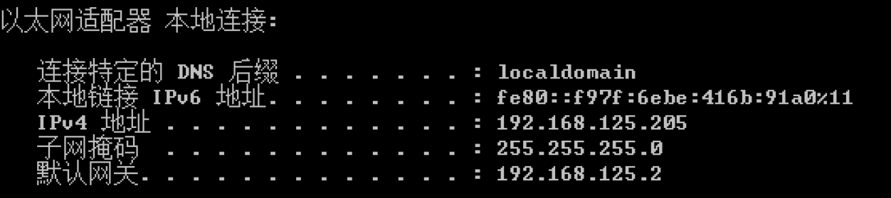
以mimikatz为例，在攻击机上以管理员身份运行mimikatz：
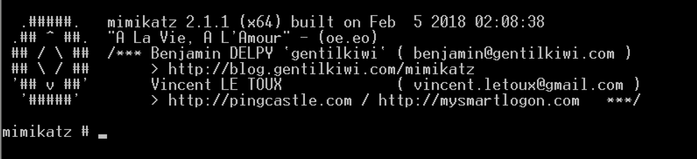
在攻击之前我们需要知道目标账户名以及hash值，这里我们假设获取到了ntlm hash：
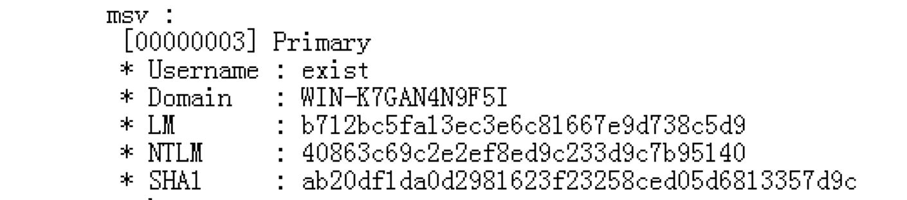
我们使用mimikatz来pth：
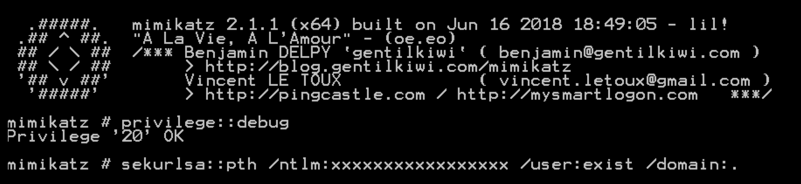
这里需要domain，user，ntlm以及打开的程序四个参数。默认情况下打开cmd。
我们知道，pth只是一种无明文认证的手段，我们还需要针对具体的服务进行攻击，这里以smb服务为例。通常我们访问一个unc路径时，不考虑double-hop的情况下，如果没有指定windows会自动用当前用户的凭据进行ntlm认证，例如命令dir \\Target\aaa。由于windows某些ssp会在lsass中缓存hash值，并使用它们来ntlm认证，那么理论上我们如果在lsass中添加包含目标账户的hash的合法数据结构，就可以在使用类似dir这些命令时用目标账户进行认证，这也是mimikatz中pth功能的原理。
上一步里面我们已经用mimikatz修改了内存中的hash值，那么我们就能利用弹出的cmd来测试一下是否能网络登录目标系统，访问c\$共享。
这里使用的exist用户是非内置管理员用户，尽管c$共享允许管理员组成员访问，但由于uac对网络登录的限制，导致直接访问会被Access Died：
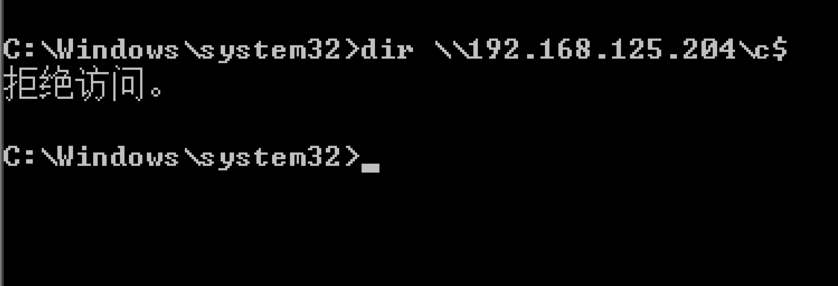
出于演示的需要，我们把靶机上的UAC级别设置为从不通知并重启,再次pth：
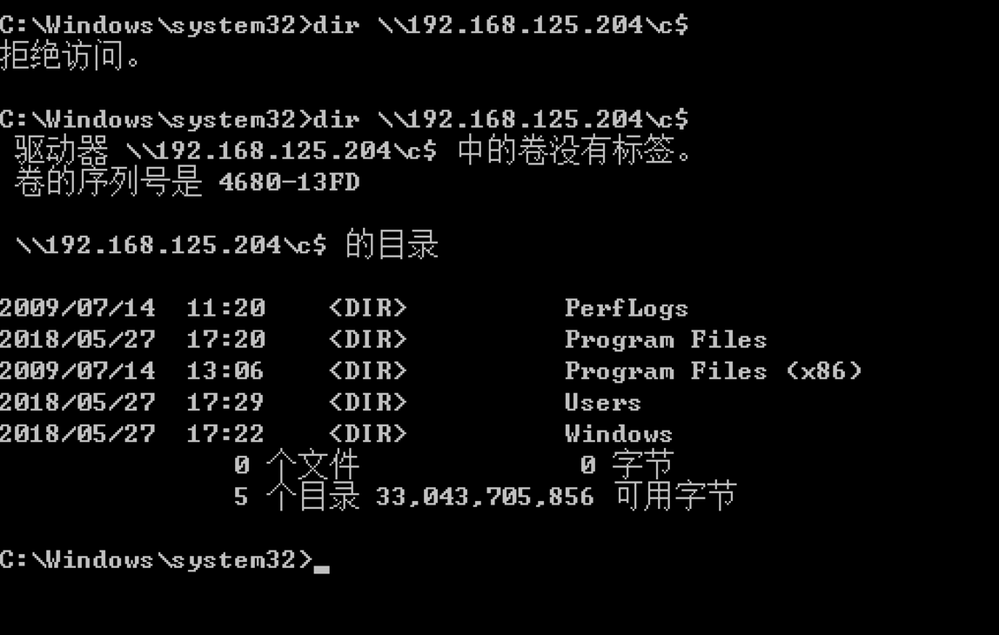
能成功访问c\$共享。
缓解手段及其局限性或可能的绕过方式
试图缓解PtH的危害可以从两个方面入手（当然不仅仅是这两方面）：
- 禁止NTLM认证
- 防止NTLM Hash被获取到
第一种方式当然是一劳永逸地阻止了PtH，但是NTLM认证已经被微软使用了很长时间，完全禁止可能会破坏已部署的一些环境，在实际应用中阻力较大。
由于NTLM认证的天然缺陷，微软似乎很难改变其行为，因此更多地把防御放在了阻止Hash被获取到这种思路。下面我们来介绍微软发布的一些补丁以及它们可能的绕过方式。
kb2871997
kb2871997在缓解PtH上做出了不少努力，其为windows增加的特性值得深入研究。它在win server 2012 R2及以上版本已默认集成。
根据微软公告，安装kb2871997后会有这么些行为：
删除lsass的明文凭证
我们前面提到过，lsass进程会缓存用户凭据，有明文有Hash，这取决于使用的ssp类型以及补丁情况。
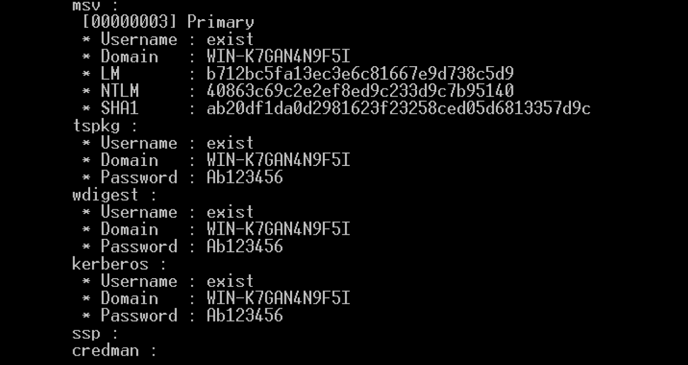
上图中msv、tspkg、wdigest、kerberos这几个ssp都获取到了凭据，它们分别用于Terminal Server认证（RDSH），ntlm认证，摘要认证以及kerberos认证。我们能看到只有msv没有明文密码。从前文中对ntlm认证过程的描述，我们可以发现除了第一步客户端要求用户输入明文密码，之后的认证过程再也没有出现过明文密码。这也就是说，ssp只需要计算ntlm hash并放在内存中就行了。
我们看到摘要认证wdigest在windows 2008 中缓存了明文密码。摘要认证类似于ntlm认证，也使用了挑战-响应机制，但它与ntlm认证较大的区别在于客户端计算响应时，需要使用到明文密码，为了实现SSO，需要将明文密码放在内存中方便进行计算，因此客户端一方的ssp理论上必须在内存中缓存明文密码，这也是为什么我们能抓到明文密码的原因；与之相比，NTLM SSP使用的单向函数如NTOWFv2只需要计算一次并放置在内存中，之后计算响应只需要这个hash值即可。
kb2871997会删除除了wdigest ssp以外其他ssp的明文凭据，但对于wdigest ssp只能选择禁用。用户可以选择将HKEY_LOCAL_MACHINE\SYSTEM\CurrentControlSet\Control\SecurityProviders\WDigest\UseLogonCredential更改为0来禁用。
安装kb2871997之后我们使用mimikatz抓取内存中的密码：
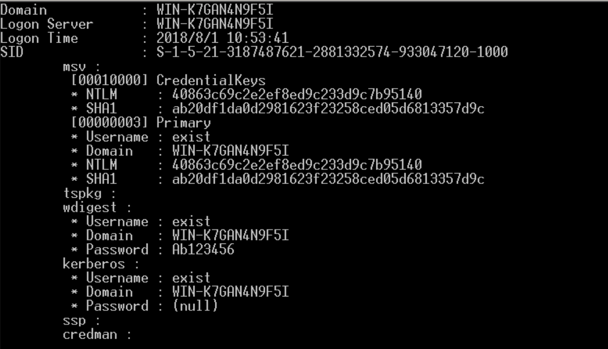
wdigest ssp默认仍然在内存中存储明文密码，更改注册表后注销，重新登录，再次抓取：
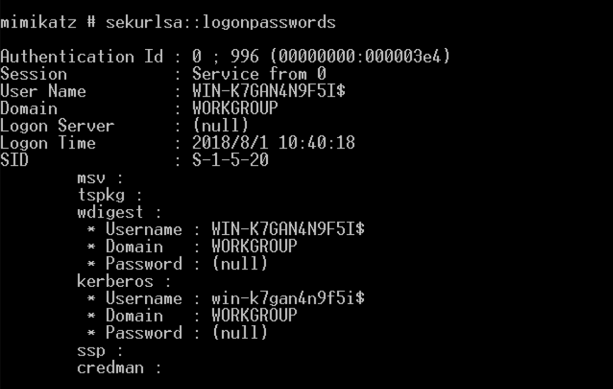
wdigest已经抓不到明文密码以及密码hash。
局限性
这仅仅是增大了从内存中获取ntlm hash的难度，但并不能阻止从注册表等其他地方获取。
能够禁止用户网络登录
下图中，工作组环境可以在本地安全策略->用户权限分配->拒绝从网络访问这台计算机配置是否允许用户或用户组网络登录：
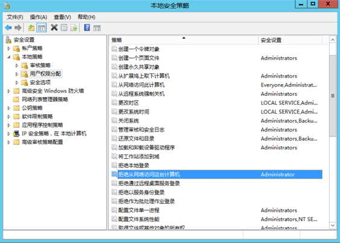
理论上UAC无法限制RID为500的用户网络登录，但打补丁并配置好禁止administrator(RID==500)网络登录，测试结果如下：
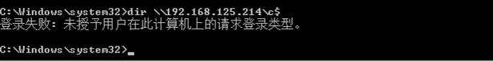
局限性
处理方式太过粗暴，可能会影响用户正常需求。
添加“受限管理员模式”
受限管理员模式能阻止主机缓存内存中远程验证用户的凭据。
我们来做两个测试
- 测试一： RDP客户端使用微软自家的mstsc，服务端未打kb2871997，不加任何参数启动：
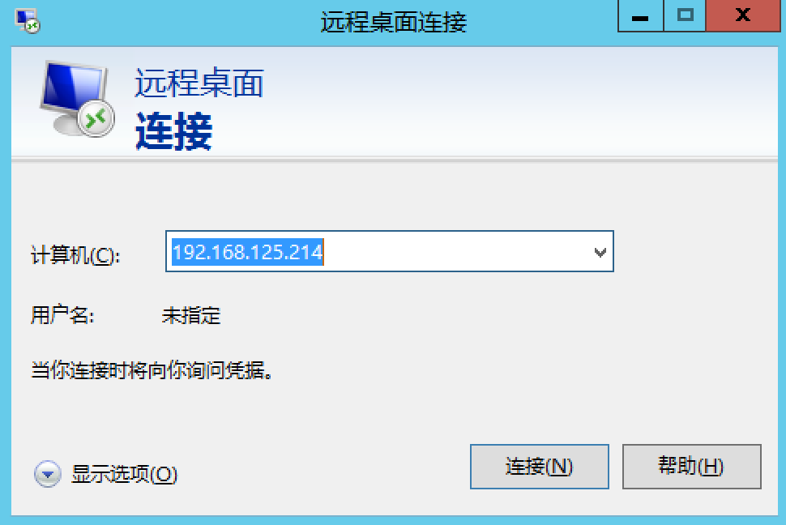
启动连接，客户端要求我们输入用户名和密码：
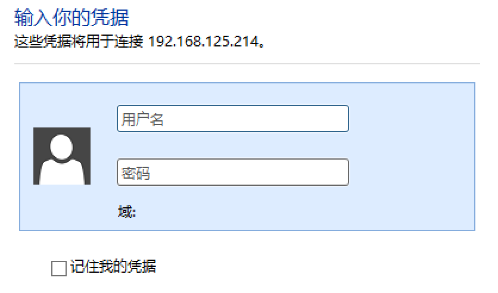
登录成功后，使用mimikatz获取内存中的密码：
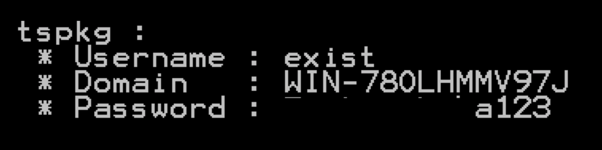
我们能够获取到明文密码，ntlmssp的NTLM Hash也能获取到，这里就不再截图了。 - 测试二：客户端使用
mstsc /restrictedadmin，也即受限管理员模式启动，服务端支持受限管理员模式：
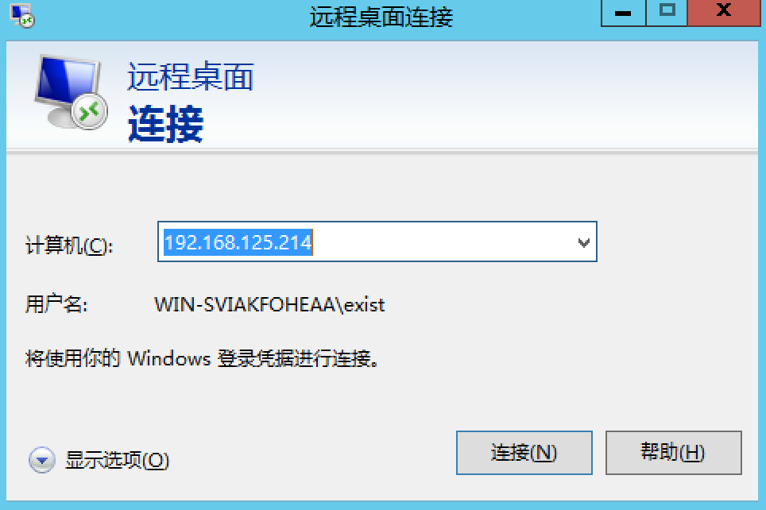
我们发现mstsc提示将使用我们到windows登录凭据进行连接。
如果客户端和服务端有相同用户名和密码的账户，可以直接连接成功，没有弹出要求输入凭据的对话框。连接成功后，使用mimikatz获取内存中的密码：
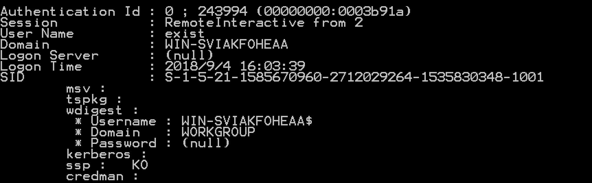
我们发现远程桌面会话没有缓存用户凭据，这其实就是受限管理员模式的特性。
下面我们来聊聊为什么会出现这种情况：
- 远程桌面默认无约束委派用户凭据，以达到完全在远程服务器上代表用户的目的。当我们连接到远程桌面服务器上，可以使用dir命令连接其他的smb服务器并使用我们的凭据认证，这是因为客户端进行远程桌面连接的时候会发送用户的明文密码，这个密码可以用于计算NTLM Hash并缓存在远程桌面服务器上。
- 受限管理员模式下，远程桌面客户端会首先使用客户端机器上已缓存的NTLM Hash进行认证，不需要用户输入用户名和密码，也就不会把明文密码委派到目标；即便缓存的hash认证失败，用户必须输入明文密码，mstsc也不会直接发送明文密码，而是计算出所需的值后再发送。这种模式下，登录到远程桌面服务器上并使用dir命令向其他smb服务器认证时，将使用空用户(用户名
\)登录，几乎都会登陆失败。
从上面两种模式对比可以看出，客户端直接发送明文密码到服务端，可能会被mimikatz从内存中获取到；而受限管理员模式则能避免发送明文，服务端内存中也不会缓存用户凭据。
局限性
“受限管理员模式”的初衷是为了保护远程桌面服务端，即当服务端被攻陷时，使用受限管理员模式可以在一定程度上保护客户端用户的凭据不被mimikatz等工具获取到。因此，这个保护措施并不是直接针对PtH，效果也是有限的。
实际上受限管理员模式本身就会增加新的攻击路径，即可以以PtH的方式向远程桌面服务器发起认证。也就是说，在实际应用中，我们可以利用mimikatz的sekurlsa::pth来启动mstsc，使用受限管理员模式来无明文密码登录，当然也有些其他的RDP客户端可以实现利用密码Hash来认证，例如FreeRDP。
Protected Users
受保护用户是一个新的域全局安全组，对于该组的成员，Windows 8.1设备或Windows Server 2012 R2主机不会缓存受保护用户不支持的凭据。如果这些组的成员登录到运行早于Windows 8.1的Windows版本的设备，则该组的成员没有其他保护。
登录到Windows 8.1设备和Windows Server 2012 R2主机的受保护用户组的成员不能再使用：
- 默认凭据委派（CredSSP） - 即使启用了“ 允许委派默认凭据”策略，也不会缓存纯文本凭据
- Windows摘要 - 即使启用明文凭据也不会进行缓存
- NTLM - NTOWF未缓存
- Kerberos长期密钥 - Kerberos票证授予票证（TGT）在登录时获取，无法自动重新获取
- 离线登录 - 未创建缓存的登录验证程序
如果域功能级别是Windows Server 2012 R2，则该组的成员不能再：
- 使用NTLM身份验证进行身份验证
- 在Kerberos预身份验证中使用数据加密标准（DES）或RC4密码套件
- 通过使用无约束或约束委派来委派
更新用户票证（TGT）超过最初的4小时生命周期
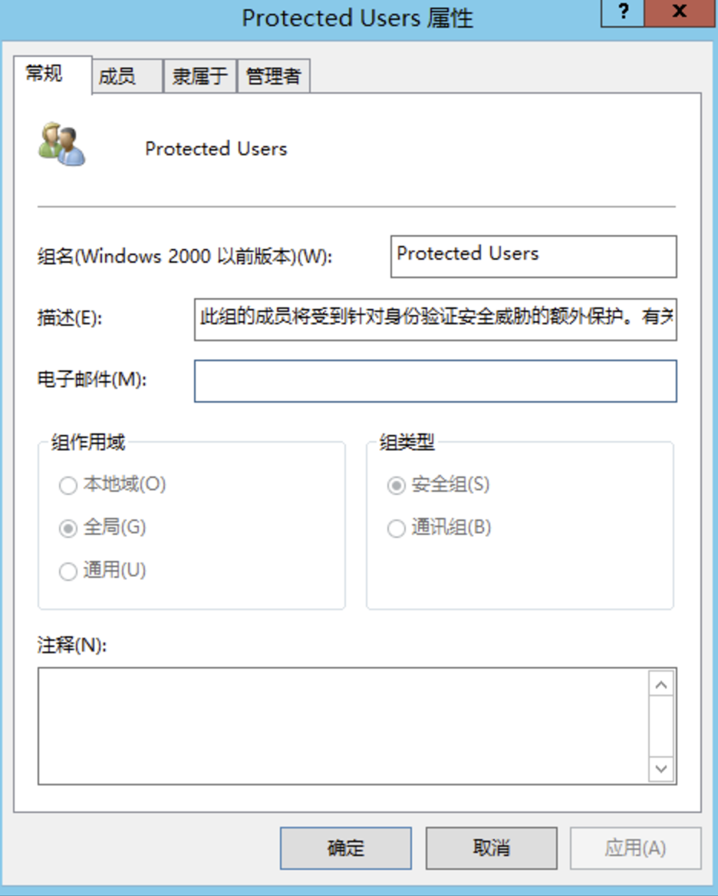
在域账户未加入Protected Users组时，我们使用mimikatz获取内存中的凭据：
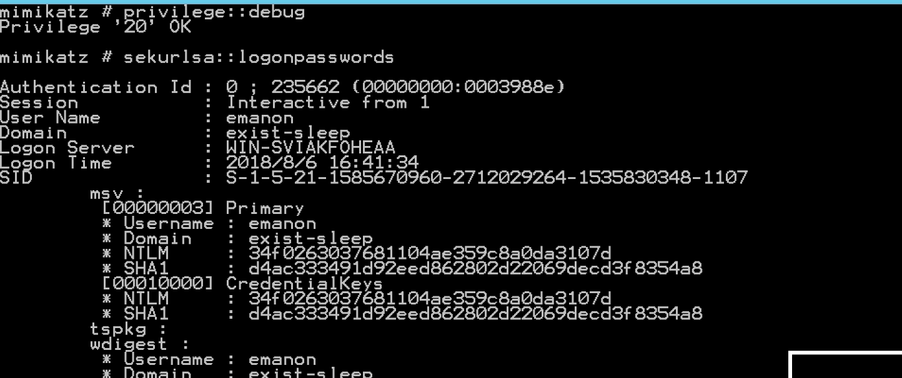
我们可以看到ntlmssp缓存了emanon账户的密码hash。我们将此用户加入Protected Users:
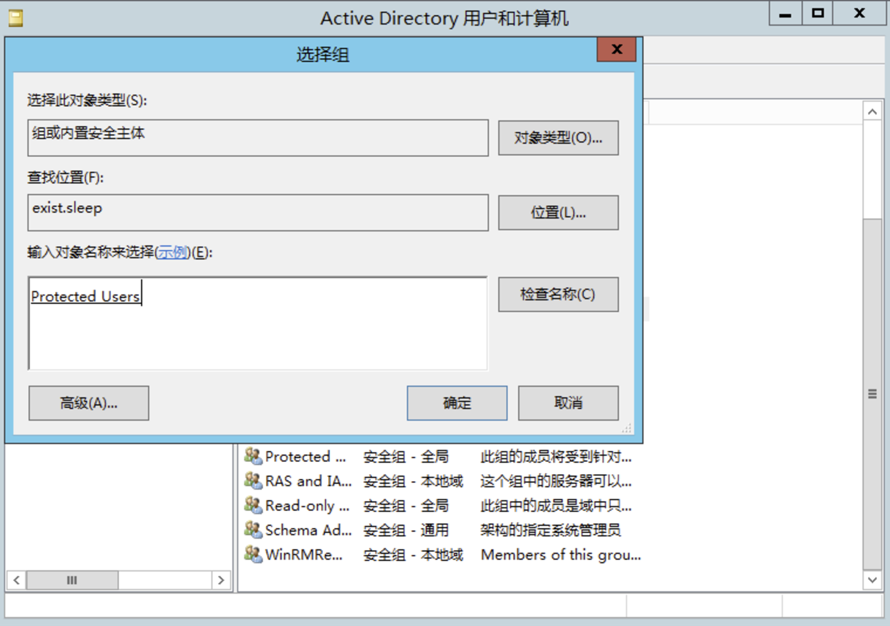
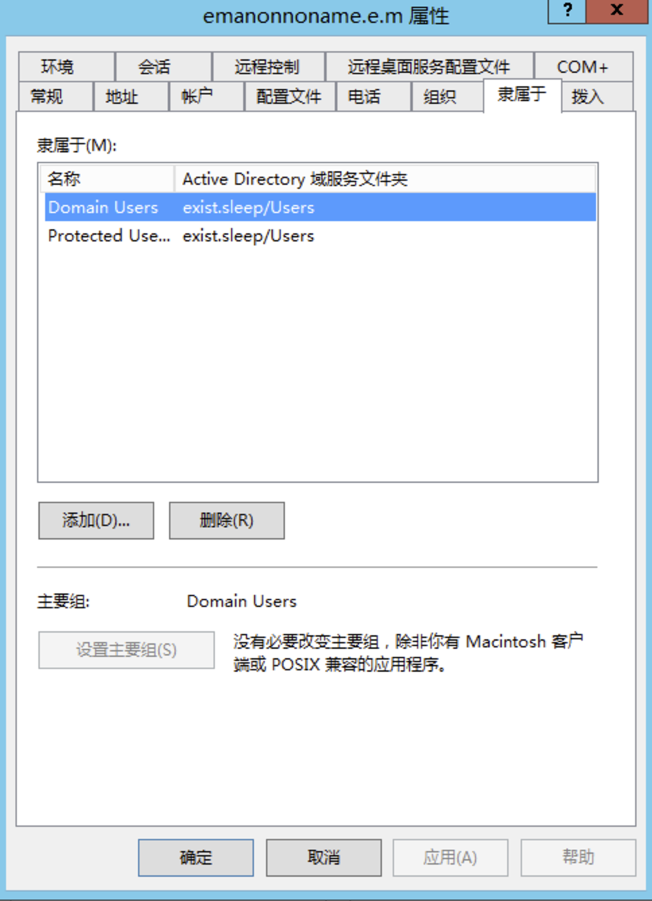
注销，重新登录，再次使用mimikatz抓取密码：
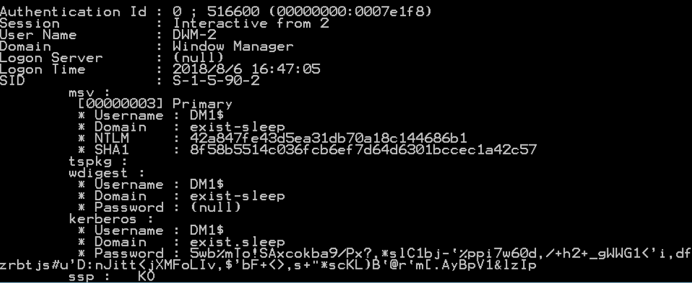
emanon用户的ntlm hash已经无法获取到，但机器账户DM1$以及本地用户的hash仍然能获取到，这也说明Protected Users保护范围是有限的。
网上有些文章提到了Pass-the-Key（Overpass-the-hash），Protected Users对这种攻击方式也有一定缓解功能。PtK是在域中攻击kerberos认证的一种方式，据称可以在NTLM认证被禁止的情况下用来实现类似PtH的功能（毕竟是针对kerberos认证，其实与NTLM认证没什么关系）。关于这种攻击方式可以查看本节的参考，这里不再赘述。我们比较关心使用mimikatz来Pass-the-Key所需要的信息，其中必须有的是请求tgt所需的用户hash，这可以使用mimikatz中的sekurlsa::ekeys来获取：
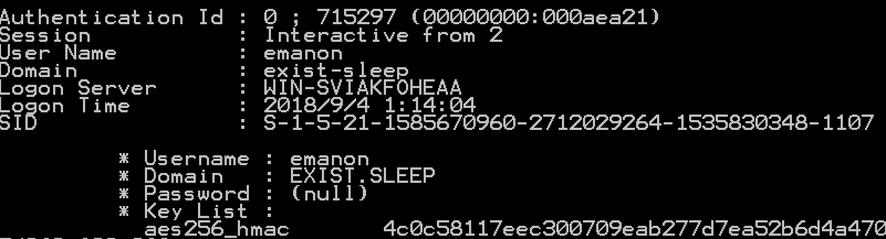
经测试，域功能级别为windows server 2012 R2（未测试低等级），将域用户加入Protected Users用户组后无法通过ekeys命令获取Hash。当然，机器账户还是能够获取到。
局限性
Protected Users是一个域安全组，仅能在域中保护用户，并且阻止抓取用户Hash并没有直面PtH这种攻击方式，域用户凭据仍可能通过注册表Cache、钓鱼攻击等方式获取到。
Additional LSA Protection
LSA（包括本地安全机构服务器服务（LSASS）进程）验证用户是否进行本地和远程登录，并实施本地安全策略。Windows 8.1操作系统为LSA提供额外保护，以防止未受保护的进程读取内存和代码注入。启用此功能后无法把debugger attach到进程上。在win8.1及2012 r2以上有效，启用的方法是reg add HKEY_LOCAL_MACHINE\SYSTEM\CurrentControlSet\Control\Lsa /v RunAsPPL /t REG_DWORD /d 1
之后重启。
重启之后，使用mimikatz抓取内存中的密码：
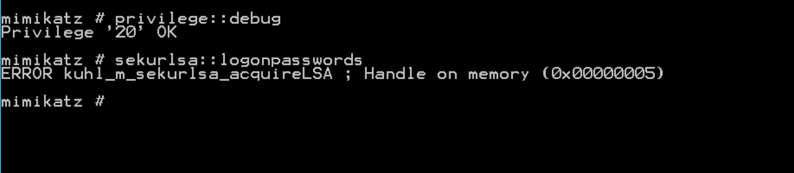
使用lsadump::lsa /inject:
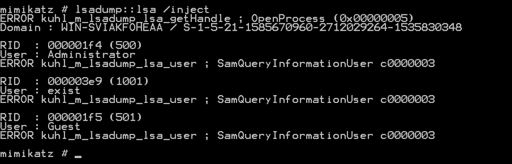
同样无法获取到密码hash
绕过方式
mimikatz能够通过加载其驱动程序来绕过LSA Protection。在实际使用中需要注意mimikatz同目录下需要有驱动程序mimidrv.sys
命令：1
2
3privilege::Debug
!+
!processprotect /process:lsass.exe /remove
测试:
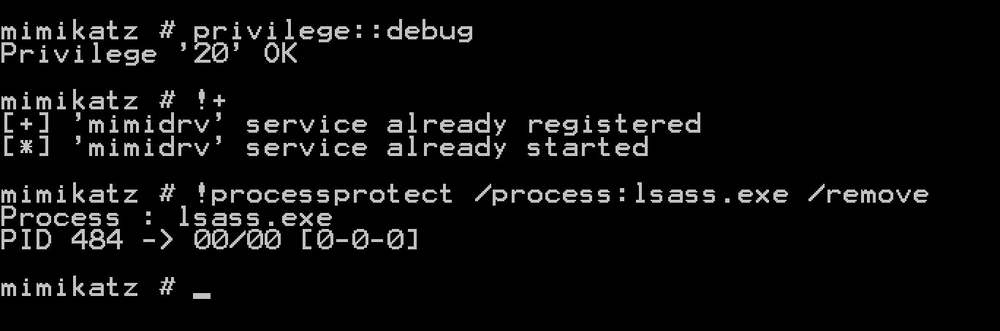
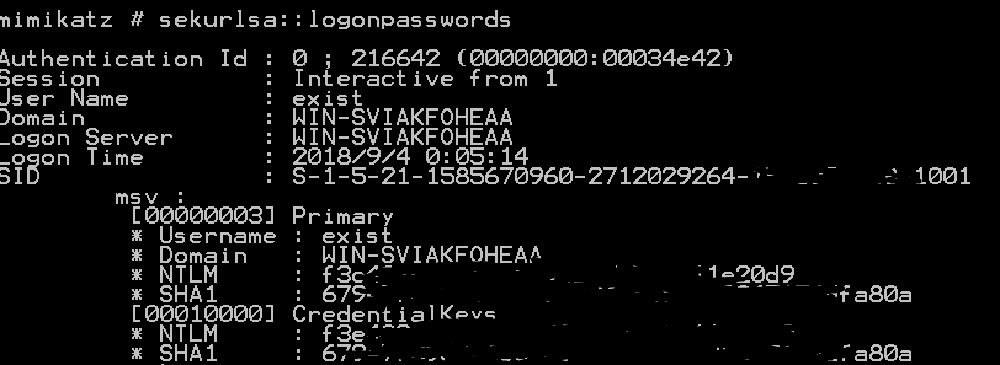
Microsoft本地管理员密码解决方案（LAPS）
LAPS是用于管理计算机本地用户密码的一个客户端扩展（CSE），在域中依赖比较少，核心在于组策略支持。
LAPS一个重要功能是随机化所有域成员本地管理员密码，密码按照较强的密码策略生成，定期修改。这使得用相同凭据横向渗透变得很困难。
本地管理员密码明文存储在AD中，仅有管理员及获得管理员委派的账户能访问到。
局限性
LAPS和仅仅增大了横向渗透的难度，并且配置上出错也可能导致前功尽弃。LAPS配置上可能出现的一个问题是向非授权用户授予“All Extended Rights”权限，这导致如果我们获取该账户，就能访问AD中的密码。
Credentials Guard
Credentials Guard是win10中引入的新功能，据称能保护NTLM密码哈希值，Kerberos票证授予票证和应用程序存储的凭据。该进程是唯一能使用明文凭据的进程，它的原理大概是这样：
当NTLM认证过程中需要用到例如ntlm hash这类凭证的时候（第三步），将Credentials Guard视为黑箱，由lsass等进程输入生成NetNTLM所需的信息（第二步收到的challenge等等），由CG处理并输出结果，而CG本身内存禁止读取，使得mimikatz这一类工具无从下手：
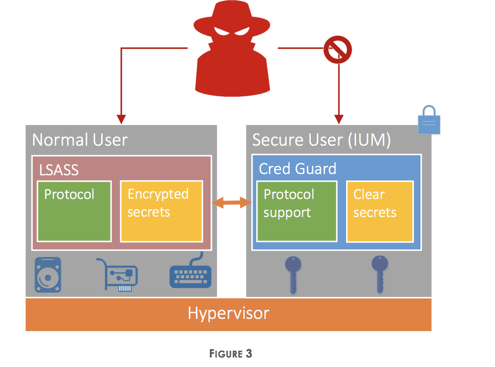
绕过方式
对付Credentials Guard有一些曲线救国的方法：
memssp
SSP的二进制形式是DLL，提供用来处理身份认证的接口（SSPI）。如果我们无法从内存中直接获取凭据，那么通过注册一个ssp来处理用户登录时输入的凭据也是一种办法。mimikatz直接在内存中加载自定义的ssp dll，能够在用户登录时获取到明文凭据。
演示：
mimikatz 内存注入ssp
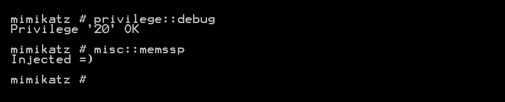
锁屏等待用户再次登录后，查看system32下的文件
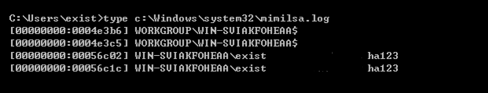
NetNTLM Downgrade Attack
NetNTLM有两个版本——v1和v2。v1相比v2更加脆弱，因此如果我们能将NetNTLMv2降级为v1，破解的效率会更高；如果能降级到NetLM，那么爆破成功率就变得极高。
在这篇文章中提到了一种迂回获取凭据的方式，核心思想是修改注册表使Windows允许在网络认证中发送算法较弱的NetHash例如NetNTLMv1，而实际上我们可以直接与NTLM SSP交互而不必产生网络流量，并能获取到NetNTLMv1用于降低破解的难度。
Credentials Guard运行时，我们虽然不能直接从内存获取到NTLM Hash，但利用上面提到的思路获取NetNTLM Hash是有可能的。
Internal-Monologue.ps1使用演示：
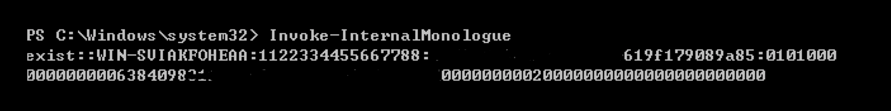
参考资料：
https://blog.nviso.be/2018/01/09/windows-credential-guard-mimikatz/
https://github.com/eladshamir/Internal-Monologue
https://technet.microsoft.com/en-us/library/2006.08.securitywatch.aspx
总结
由于NTLM认证本身具有缺陷性，导致攻击者可以在不知道明文密码，只知道密码Hash的情况下完成认证。这个缺陷就目前来看无法修复，微软也只能建议使用更安全的kerberos协议来代替ntlm协议，而其发布的补丁也并没有触及PtH这种攻击思想的本质，仅仅是增大了攻击的难度或者粗暴地禁止NTLM认证，因此依然存在绕过的可能。
Thanks
我在学习及研究过程中受到@360无线电安全研究院及@SycloverSecurity的大力支持与帮助，在此一并表示衷心的感谢。